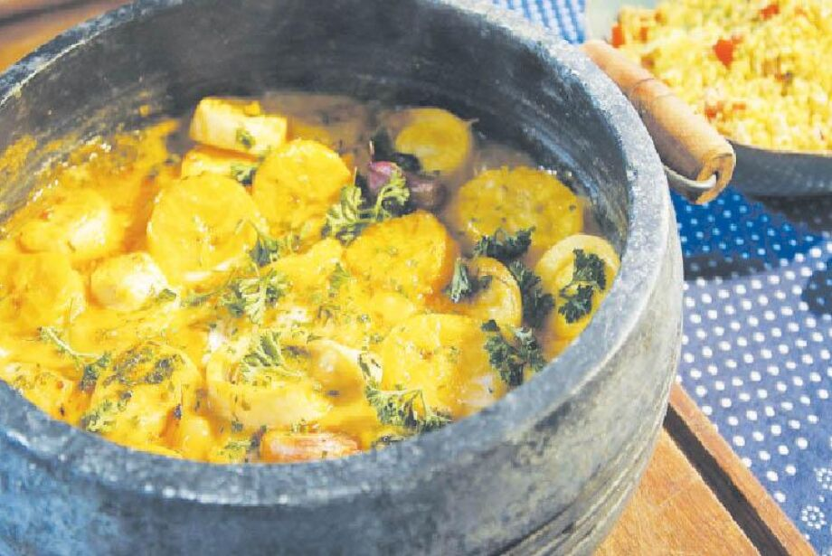

Moqueca Pantaneira
Variante regional da moqueca, típica do Pantanal, feita com peixes de água doce, temperos regionais e óleo de urucum, garantindo cor e sabor autêntico.

Ingredientes
- 1 kg de peixe de água doce em postas
- 2 tomates picados
- 1 pimentão picado
- 1 cebola picada
- 2 dentes de alho amassados
- 3 colheres de sopa de óleo de urucum
- Sal, pimenta e cheiro-verde a gosto
Modo de Preparo
- Tempere o peixe com sal e pimenta.
- Em uma panela, aqueça o óleo de urucum e refogue cebola, alho, tomate e pimentão.
- Adicione o peixe, cubra com água e cozinhe em fogo baixo até o peixe ficar macio.
- Finalize com cheiro-verde e sirva quente.
Dica do Chef: Não mexa muito o peixe durante o cozimento para que não desmanche. Sirva com arroz branco.